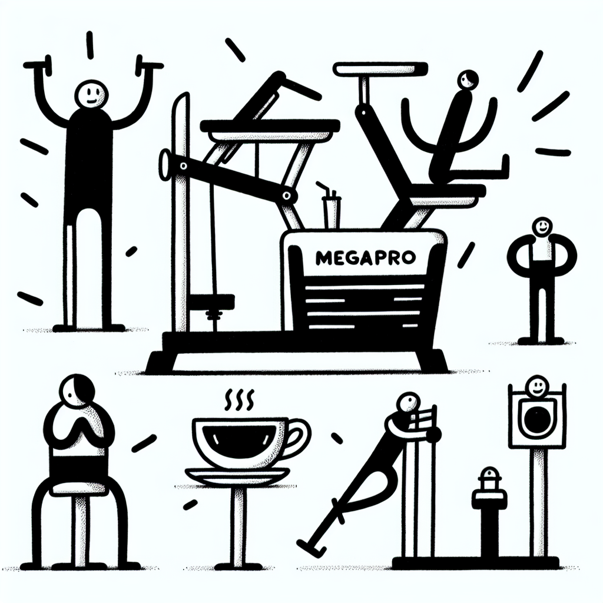

Mal de dos et Lagree : la solution miracle ?
Mal de dos et Lagree : la solution miracle ?
Vous souffrez de maux de dos chroniques ? Et si la méthode Lagree était votre solution ? Un cocktail unique de bien-être et de performance, la méthode que nous proposons chez DOZ à Anglet pourrait transformer votre quotidien.
Comprendre le mal de dos : un fléau moderne
Le mal de dos est souvent décrit comme le "mal du siècle". Il affecte une majorité d'entre nous à un moment de notre vie, parfois de façon chronique. Les causes ? Souvent multiples :
- Mauvaises postures,
- Activité physique insuffisante,
- Stress et fatigue,
- Sédentarité accrue par le télétravail.
Mais ne désespérez pas, chaque problème a sa solution, et c'est là que la magie de la méthode Lagree entre en jeu.
La méthode Lagree : qu'est-ce que c'est ?
Pouvez-vous imaginer un entraînement qui combine intensité, faible impact et résultats visibles ? Bienvenue dans l'univers du Studio Lagree de DOZ à Anglet.
La méthode Lagree se distingue par son approche innovante :
- Utilisation de machines MegaPro spécialement conçues,
- Renforcement musculaire intense tout en protégeant les articulations,
- Des exercices qui ciblent précisément les muscles centraux responsables de la stabilisation spinale.
Ce n'est pas un hasard si de nombreux adeptes témoignent d'une amélioration notable de leur posture et d'une réduction significative des douleurs dorsales.
Les bienfaits de Lagree pour le dos
Adopter la méthode Lagree, c'est offrir à votre dos un renouveau. Voici quelques-uns des nombreux bienfaits que vous pourriez constater :
- Muscles profonds renforcés : Un travail ciblé pour fortifier les muscles stabilisateurs et ainsi réduire les risques de douleurs.
- Flexibilité améliorée : Des mouvements fluides et contrôlés qui favorisent l'assouplissement musculaire.
- Posture corrigée : Une meilleure conscience corporelle, essentielle pour aligner correctement votre colonne vertébrale.
- Stress réduit : L'effet apaisant de l'activité physique combinée à un environnement ressourçant comme celui de DOZ, où le bien-être est au cœur de chaque action.
DOZ : au-delà du sport, une philosophie
Ce qui rend DOZ unique, c'est notre approche holistique. Nous croyons fermement que le bien-être passe par plus que l'exercice physique. Notre Coffee Shop offre une délicieuse sélection de plats sains, préparés avec des ingrédients locaux et de saison, ainsi que des cafés de spécialité pour ravir vos papilles après chaque séance. C'est l’alliance de l'effort et du réconfort, un mode de vie que nous aimons appeler 'Instant Brut'.
L'environnement minimaliste et lumineux de DOZ, avec ses éléments de béton, bois et métal, est conçu pour simplifier votre expérience et vous aider à vous recentrer sur l'essentiel ; vous-même.
Commencez votre voyage bien-être avec DOZ
Il est temps de redonner à votre dos le soutien qu'il mérite. La méthode Lagree pourrait bien être la clé de votre transformation. Qu'attendez-vous pour vous lancer ? Rejoignez-nous au DOZ Studio Lagree à Anglet et découvrez comment nos séances peuvent concrètement changer votre quotidien.
Appelez à l'action : Réservez dès maintenant votre première séance ou venez découvrir par vous-même notre Coffee Shop où nous serons ravis de vous accueillir. Chez DOZ, chaque jour est une nouvelle opportunité de privilégier votre bien-être.